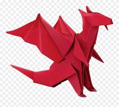
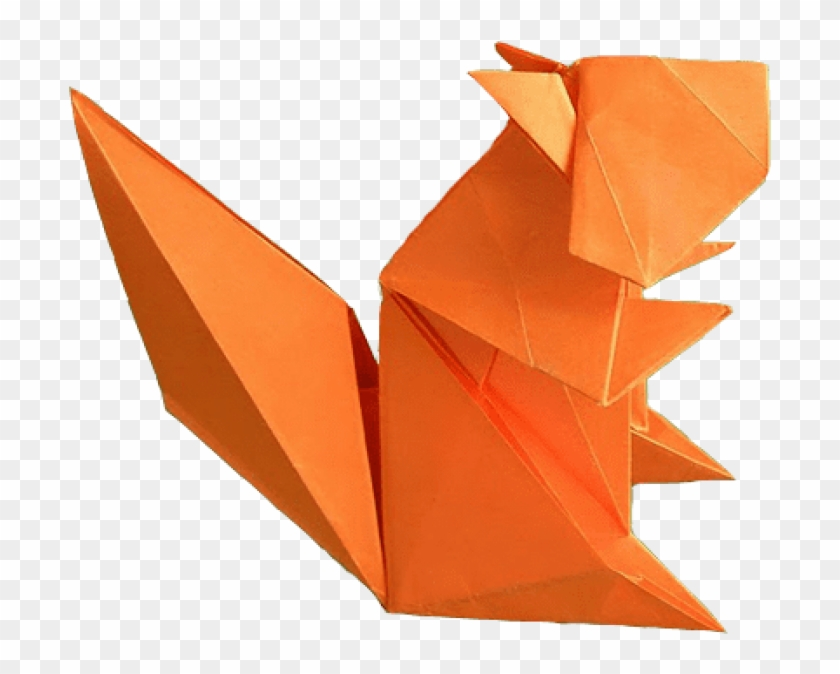

Origami Designs
Origami Instructions and Diagrams
Step by step diagrams are probably the most popular and easiest to
follow folding things out of a paper.
Trying to find good origami instructions on the internet an be a lot of work though.
To help your search we've put together a databse of free origami diagrams
anywhere on the internet.

Dragon
- A dragon is a large, serpentine legendary creature that appears in the folklore of many cultures around the world
- A dragon can fly
- A dragon can look like a snake with wings, or like lizards

Squirrels
- Squirrels can find food buried beneath a foot of snow
- A squirrel's front teeth never stop growing
- Squirrels may lose 25 percent of their buried food to thieves